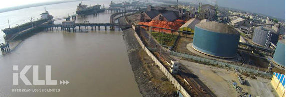

Receipt of Panamax vessel bring cost advantage in terms of lower cargo freight per metric tonne of material imported by IFFCO.
Handling of large vessels reduces per tonne voyage costs.
Saving of per-tonne costs of production due to avoidance of transport costs and transit losses between port and plant.

Environmental Protection
It aids in environmental protection due to elimination of spillage and wind losses.
Benefits to Kandla Port Trust as the existing port facilities are relived of handling cargo volume. Environmental performance of the port improves due to reduced road traffic emissions and material spillage in the port and neighbouring areas.
Others
IFFCO receives large quantities of imported material, leading to economical and operational convenience of handling and bagging of fertiliser in the existing plant facilities.
Road movement for transportation of IFFCO cargo from Kandla port premises to the storage areas in the plant is eliminated.
Material handling being carried out at the barge jetty by mechanical means, the problem of spillage of fertiliser ,making road slippery during rainfall/ high humidity is eliminated.
Timely Delivery of Goods
IFFCO is able to handle all its solid raw materials and fertilisers product without any time delay
Timely receipt of material facilitate uninterrupted production. Plant operations are streamlined for achieving optimum plant operating efficiency.
Handling of imported fertiliser directly from barge jetty ensures timely despatch of fertiliser from plant and availability of fertiliser to the farmers when the same is required.
Overcoming the delays due to pre-berthing detentions especially during peak seasons when vessels are required to wait for berth ranging from 3-10 days which severely hampers plant operations.